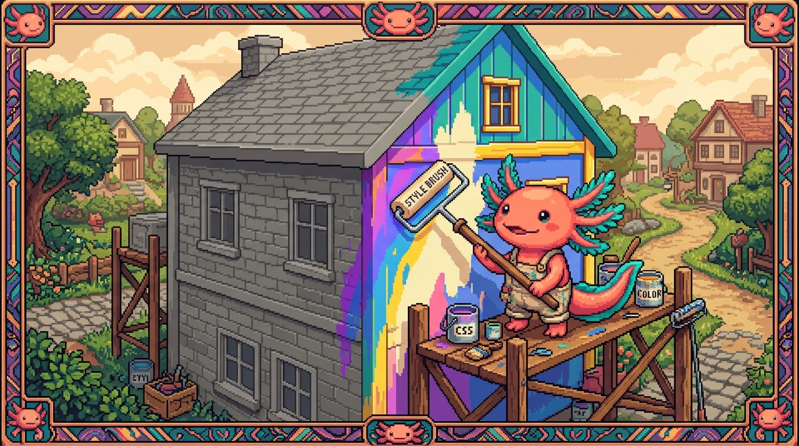

Capítulo 01 — ¿Qué es CSS?

En HTML aprendiste a colocar el contenido. El problema es que se veía bastante soso: texto negro, fondo blanco y todo apilado uno tras otro. CSS es justo lo que arregla eso. En este capítulo vas a entender qué es, cómo se engancha a tu HTML y cómo se escribe, que es más fácil y lógico de lo que parece.
1. Qué es CSS y para qué sirve
🟦 ¿Qué significa? — CSS
CSS son las siglas de Cascading Style Sheets ("hojas de estilo en cascada"). Es el lenguaje con el que describes cómo se ve una página: colores, tamaños, tipografías, espacios, posiciones, animaciones. ¿Para qué sirve? Para separar el contenido (HTML) de su apariencia (CSS). Un mismo HTML puede mostrarse de mil maneras distintas con solo cambiar el CSS.
🟦 ¿Qué significa? — "En cascada" y "hoja de estilos"
- Hoja de estilos: un archivo (normalmente con extensión
.css) lleno de reglas de aspecto.- En cascada: cuando varias reglas apuntan al mismo elemento, existe un sistema de prioridades que decide cuál se aplica (la que "cae" con más fuerza). Lo veremos a fondo más adelante; por ahora basta con que recuerdes que "cascada" es la forma en que se resuelven los choques entre estilos.
💡 Tip — La gran idea: separar contenido y presentación
Piensa en una revista: por un lado está el texto de los artículos y por otro el diseño (tipografías, colores, columnas). En la web pasa lo mismo: HTML es el texto y la estructura, CSS es el diseño. Tenerlos separados te deja rediseñar el sitio entero tocando solo el CSS, sin meter mano al contenido.
2. La sintaxis de CSS: regla, selector, propiedad, valor
CSS se escribe en reglas. Esta es su anatomía, y la vas a repetir miles de veces:
h1 {
color: #1B6B6B;
font-size: 32px;
}
🟦 ¿Qué significa? — Las partes de una regla CSS
- Selector (
h1): a qué elementos del HTML afecta la regla (aquí, a todos los<h1>).- Propiedad (
color,font-size): qué característica vas a cambiar.- Valor (
#1B6B6B,32px): cómo queda esa característica.- Declaración: la pareja
propiedad: valor;(¡siempre termina en punto y coma;!).- Las declaraciones van entre llaves
{ }, que forman el bloque de la regla.
Leído en español sería: "a todos los <h1>, ponles el color #1B6B6B y un tamaño de letra de 32 píxeles."
selector propiedad valor
│ │ │
h1 { color: #1B6B6B; }
└── declaración ──┘
⚠️ Cuidado — Los dos errores más comunes de principiante
- Olvidar el
;al final de una declaración: la siguiente regla se puede romper.- Confundir
:con=: en CSS van dos puntos (color: red;), nunca el igual. Por suerte, VS Code te resalta estos fallos con colores, así que los pillarás enseguida.
3. Las tres formas de aplicar CSS (y cuál usar)
Hay tres maneras de meter CSS en una página. Te las muestro todas, pero solo una es la acertada en casi cualquier caso.
🟦 ¿Qué significa? — CSS en línea (inline)
Estilos escritos dentro de la propia etiqueta HTML, con el atributo
style:html <h1 style="color: #1B6B6B;">Hola</h1>Cuándo usarlo: casi nunca. Mezcla el contenido con el aspecto, cuesta mantenerlo y no se puede reutilizar. Sirve, como mucho, para una prueba rápida.🟦 ¿Qué significa? — CSS interno (en el
<head>)Estilos metidos dentro de una etiqueta
<style>, en el<head>de la página:html <head> <style> h1 { color: #1B6B6B; } </style> </head>Cuándo usarlo: en páginas muy pequeñas de un solo archivo. Solo afecta a esa página.🟦 ¿Qué significa? — CSS externo (archivo .css) — ✅ el recomendado
Los estilos viven en un archivo aparte (por ejemplo
styles.css) que enganchas desde el<head>con<link>(¿te acuerdas del módulo 01?):html <head> <link rel="stylesheet" href="styles.css"> </head>css /* styles.css */ h1 { color: #1B6B6B; }Por qué es el mejor: un único archivo de estilos vale para todas las páginas del sitio; cambias un color ahí y el cambio se nota en todo el sitio a la vez. Es exactamente lo que hace tutunal-digital/sitio-web/styles.css.
4. Selectores: cómo apuntar a lo que quieres
El selector decide a qué elementos afecta tu regla. Estos son los que no te puedes saltar:
🟦 ¿Qué significa? — Selector de etiqueta, de clase y de id
- Por etiqueta (
p,h1,a): afecta a todos los elementos de ese tipo.css p { color: gray; } /* todos los párrafos */- Por clase (
.destacado): afecta a los elementos que llevan ese atributoclass. Se escribe con un punto delante. Es el que más vas a usar.css .destacado { background: #FBF9F4; }html <p class="destacado">Este párrafo resalta.</p>- Por id (
#menu): afecta al único elemento que tenga eseid. Se escribe con almohadilla.css #menu { font-weight: bold; }🟦 ¿Qué significa? — Clase (class) en HTML
Una clase es como una "etiqueta de categoría" que le cuelgas a uno o varios elementos HTML para poder darles estilo en grupo. Un mismo elemento puede llevar varias clases, separadas por espacios:
html <button class="boton boton-primario">Enviar</button>¿Por qué la clase es la protagonista? Porque la reutilizas: defines.botonuna sola vez y todos los botones con esa clase comparten el mismo estilo. Así trabaja tu sitio y, llevado al extremo, también Tailwind en RachaSimple/Faro (que en el fondo es "muchas clases pequeñas").💡 Tip — Clase vs. id, ¿cuándo cada uno?
Usa clases para los estilos que se repiten (botones, tarjetas, textos destacados). Deja el id para algo que sea único en la página (un ancla, un elemento que controla JavaScript). A la hora de dar estilo, en el día a día casi siempre tirarás de clases.
5. Tu primer CSS, paso a paso
Vamos a darle estilo a la página HTML que montaste en el módulo 01.
Paso 1. Junto a tu index.html, crea un archivo styles.css.
Paso 2. Conéctalo: en el <head> de tu HTML, añade:
<link rel="stylesheet" href="styles.css">
Paso 3. En styles.css, escribe:
body {
background: #FBF9F4;
color: #1F2733;
font-family: sans-serif;
}
h1 {
color: #1B6B6B;
}
.destacado {
background: #D98A3D;
color: white;
}
Paso 4. En tu HTML, ponle class="destacado" a algún párrafo. Guarda todo y recarga el
navegador: verás el fondo crema, el título en verde-azulado y el párrafo destacado en naranja.
Acabas de tomar el control del aspecto de tu página.
🟦 ¿Qué significa? — Comentario en CSS
En CSS, los comentarios (notas que el navegador ignora) se escriben entre
/*y*/:css /* Esto es un comentario en CSS */ h1 { color: #1B6B6B; } /* también puede ir al final de una línea */(Acuérdate: en HTML era<!-- -->. Cada lenguaje tiene su propia forma.)
✅ Checklist — ¿ya domino esto?
- [ ] Entiendo que CSS controla la apariencia y por qué se separa del HTML.
- [ ] Reconozco la anatomía: selector { propiedad: valor; }.
- [ ] Sé las tres formas de incluir CSS y por qué la externa (
.css+<link>) es la mejor. - [ ] Uso selectores por etiqueta, clase (
.) e id (#). - [ ] Entiendo qué es una clase y por qué es la forma reutilizable de dar estilo.
- [ ] Pude conectar un
styles.cssy cambiar colores de mi página.
🧪 Ejercicios
- Lee una regla. Traduce a español qué hace:
css .tarjeta { background: #FBF9F4; font-size: 18px; } - Encuentra los errores. Corrige esta regla (tiene dos fallos):
css h2 { color = #1B6B6B font-size: 24px } - Selector correcto. ¿Qué selector usarías para: (a) todos los enlaces, (b) los elementos
con
class="aviso", (c) el elemento conid="cabecera"? - Clase reutilizable. Escribe una clase
.botonque dé fondo#1B6B6B, texto blanco y aplícala a dos botones distintos en HTML. - 💻 Estiliza tu página. Conecta un
styles.cssa tuindex.htmldel módulo 01 y cambia: el color de fondo delbody, el color de los<h1>, y crea una clase.destacadopara un párrafo. Experimenta cambiando los valores de color y recargando.
➡️ Siguiente: Capítulo 02 — Colores, unidades y tipografía.